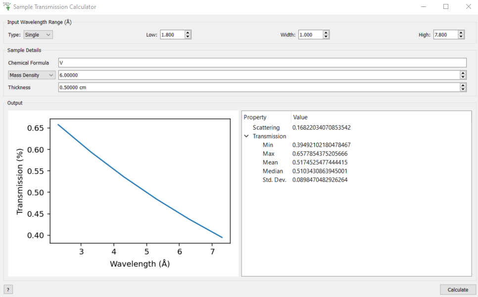

Sample Transmission Calculator Testing#
Introduction#
This is a manual testing guide for the Sample Transmission Calculator (Interfaces > General > Sample Transmission Calculator).
Basic Usage#
For the Input Wavelength Range at the top of the window select
SinglefromTypedropdown box and set
Low=1.8
Width=1
High=7.8
In sample details set
Chemical Formula = V
Mass Density = 6
Thickness = 0.5
Click
Calculatebutton in bottom right - it should produce the following
{kind=link}

Select
Number Densityinstead ofMass Densityin the sample details and setNumber Density = 0.072(it should produce an near identical result with transmission ~0.65 at the lowest wavelength).
Multiple atoms in chemical formula#
In sample details set
Chemical Formula = C2 H4
Mass Density = 0.93
Thickness = 0.015
Click
Calculate- the transmission should be ~0.9 for all wavelengths (the cross-section is dominated by incoherent scattering rather than absorption - only the latter depends on wavelength).Set
Chemical Formula = C4 H8and clickCalculate- the result should not change. This doubles the number of scatterers in a formula unit, but because the mass density is the same it halves the number of formula units in the sample volume.Select
Number Densityinstead ofMass Densityin the sample details and setNumber Density = 0.12(it should produce an near identical result with transmission ~0.9 at the lowest wavelength). This is because the units ofNumber Densityareatoms/Ang^3notformula units/Ang^3.Set
Chemical Formula = C2 D4andCalculate- the transmission should be ~1 (deuterium has a much smaller incoherent cross-section than hydrogen).
Validation of Single Wavelength Range#
For each of the following instructions there should be a warning message in red at the bottom of the window.
Try setting
Low > HighTry setting
Width > (High - Low)Try setting
Width = 0
It should not allow you to input the following in the spin-boxes (no warning will be printed).
Negative numbers
Punctuation
Non-numeric characters (including punctuation)
If you delete the contents of a box and then click Calculate it will reset it with the previously entered values.
Multiple Wavelength Range#
For the Input Wavelength Range at the top of the window select
MultiplefromTypedropdown boxIn the
Multipleedit box enter1,1,3and clickCalculateRight-click on the
transmission_wsworkspace in the main workbench window andShow Data- you should see that there are 2 bins at wavelengths1.5 Angand2.5 AngIn the
Multipleedit box enter1,1,3,0.5,4and clickCalculate- in the workspace data table you should see additional bins at3.25 Angand3.75 AngRepeat the validation tests in Validation of Single Wavelength Range
Chemical Formula Validation#
The following should produce a warning at the bottom of the window and throw an error from CalculateSampleTransmission
Set
Chemical Formula = C2H4(i.e. remove the space)Set
Chemical Formula = ZSet
Chemical Formula = 0Set
Chemical Formula = *Set
Chemical Formula = 2C 4H